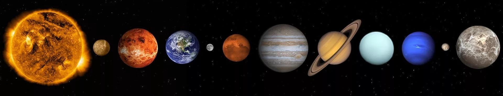

История Солнечной системы
Солнечная система – это планетная система, состоящяя из Солнца в её центре и тел, вращающихся вокруг него. Система состоит из 8 (ранее 9) планет, около 170 известных планетных спутников, бесчисленного количества астероидов, комет и других ледяных тел и огромные просторы разреженного газа и пыли, которая известна как межпланетная среда.
Общая масса Солнечной системы составляет около 1,0014 массы Солнца. Большая часть её приходится на Солнце; оставшаяся часть практически полностью содержится в восьми отдалённых друг от друга планетах, имеющих близкие к круговым орбиты, лежащие почти в одной плоскости — плоскости эклиптики. Из-за этого наблюдается противоречащее ожидаемому распределение момента импульса между Солнцем и планетами (так называемая «проблема моментов»): всего 2% общего момента системы приходится на долю Солнца, масса которого в ~740 раз больше общей массы планет, а остальные 98% — на ~0,001 общей массы Солнечной системы.
В Солнце сосредоточена подавляющая часть всей массы системы (около 99,866%), оно удерживает своим тяготением планеты и прочие тела, принадлежащие к Солнечной системе. Четыре крупнейших объекта — газовые гиганты — составляют 99% оставшейся массы (при этом большая часть приходится на Юпитер и Сатурн — около 90 %).

Четыре ближайшие к Солнцу планеты, называемые планетами земной группы, — Меркурий, Венера, Земля и Марс — состоят в основном из силикатов и металлов. Четыре более удалённые от Солнца планеты — Юпитер, Сатурн, Уран и Нептун (также называемые газовыми гигантами) — намного более массивны, чем планеты земной группы. Крупнейшие планеты, входящие в состав Солнечной системы, Юпитер и Сатурн, состоят главным образом из водорода и гелия; меньшие газовые гиганты, Уран и Нептун, помимо водорода и гелия, преимущественно содержат воду, метан и аммиак, такие планеты выделяются в отдельный класс «ледяных гигантов». Шесть планет из восьми и четыре карликовые планеты имеют естественные спутники. Юпитер, Сатурн, Уран и Нептун окружены кольцами пыли и других частиц.

В Солнечной системе существуют две области, заполненные малыми телами. Пояс астероидов, находящийся между Марсом и Юпитером, схож по составу с планетами земной группы, поскольку состоит из силикатов и металлов. Крупнейшими объектами пояса астероидов являются карликовая планета Церера и астероиды Паллада, Веста и Гигея. За орбитой Нептуна располагаются транснептуновые объекты, состоящие из замёрзшей воды, аммиака и метана, крупнейшими из которых являются Плутон, Седна, Хаумеа, Макемаке, Квавар, Орк и Эрида. В Солнечной системе существуют и другие популяции малых тел, такие как планетные квазиспутники и троянцы, околоземные астероиды, кентавры, дамоклоиды, а также перемещающиеся по системе кометы, метеороиды и космическая пыль.
Большинство крупных объектов, обращающихся вокруг Солнца, движутся практически в одной плоскости, называемой плоскостью эклиптики. Все планеты и большинство других объектов обращаются вокруг Солнца в одном направлении с вращением Солнца (против часовой стрелки, если смотреть со стороны северного полюса Солнца). Есть исключения, такие как комета Галлея. Самой большой угловой скоростью обладает Меркурий — он успевает совершить полный оборот вокруг Солнца всего за 88 земных суток. А для самой удалённой планеты — Нептуна — период обращения составляет 165 земных лет. Большая часть планет вращается вокруг своей оси в ту же сторону, что и обращается вокруг Солнца. Исключения составляют Венера и Уран, причём Уран вращается практически «лёжа на боку» (наклон оси около 90°)
Солнечная система входит в состав структуры галактики Млечный Путь.